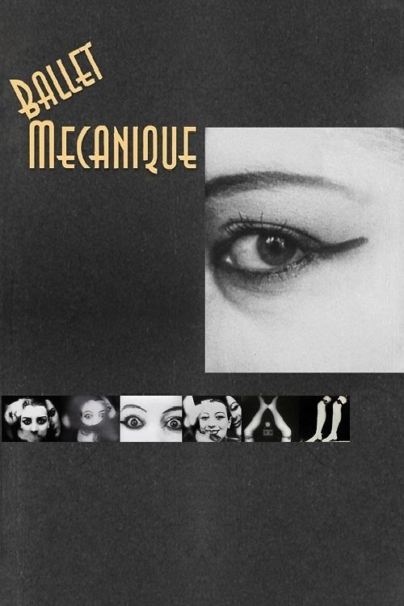

Fiche technique
- Réalisation
- Fernand Léger et Dudley Murphy — avec Man Ray ; genèse chez Ezra Pound (voir Mouvement III)
- Photographie
- Dudley Murphy, Man Ray
- Musique
- George Antheil — partition composée pour le film, jouée sans lui
- À l'écran
- Kiki de Montparnasse, Katharine Hawley Murphy
- Pays
- France
- Format
- 35 mm, muet, noir et blanc ; séquences teintées ou coloriées selon les copies
- Durée
- de 11 à 20 min selon les copies (voir ci-dessous)
- Première
- 24 septembre 1924, Vienne

Ballet mécanique est un court métrage muet français, en noir et blanc — avec, selon les copies, des séquences géométriques teintées ou coloriées à la main —, tourné à Paris entre l'automne 1923 et septembre 1924, et présenté pour la première fois en public le 24 septembre 1924 à Vienne, à l'Internationale Ausstellung neuer Theatertechnik organisée par Frederick Kiesler — la fiche de l'IRCAM donne « octobre 1924 », seule parmi les sources consultées. 1, 5, 18
À l'écran : Kiki de Montparnasse (Alice Prin) et Katharine Hawley Murphy — la femme sur la balançoire. La partition de George Antheil, composée pour le film, n'a jamais été jouée avec lui du vivant de ses auteurs (voir §5).
La question du générique, posée plutôt que tranchée. Trois formules circulent, et elles ne disent pas la même chose :
- Léger seul, Murphy en second. Le catalogue des restaurations de la Cinémathèque française crédite Fernand Léger à la réalisation, Dudley Murphy comme « assistant réalisateur » et directeur de la photographie. Le MoMA dit de même « the only film made directly by the artist », Murphy y étant le photographe qui a filmé les objets. Ce crédit vient de Léger lui-même : le carton d'ouverture de la copie du MoMA, signé de sa main, annonce que le film « a été composé par le peintre Fernand Léger en 1924 ». 5, 15, 17
- Léger et Murphy. C'est la formule d'usage, celle du distributeur Light Cone, des deux Wikipédia, et celle que porte la demande qui a ouvert cette Étude. Elisabeth Magotteaux, dans 1895 (2024), qualifie Murphy de « co-réalisateur » ; les restaurateurs de l'Eye écrivent que « Fernand Léger and Dudley Murphy made the film, in collaboration with Man Ray » ; l'IRCAM le dit « signé par Fernand Léger et Dudley Murphy », tout en jugeant l'histoire de sa paternité « plus que trouble ». 2, 10, 16, 18
- Une œuvre collective. Le Musée national Fernand Léger présente le film comme un effort artistique collectif avec Man Ray, Dudley Murphy et George Antheil ; Mauro Piccinini, dans l'enquête d'archives la plus poussée à ce jour (1895, n° 101, 2023), conclut à la « co-présence de plusieurs auteurs, dont les poétiques étaient probablement irréductibles », et y inclut Ezra Pound. 1, 6
Avant l'enquête d'archives, la défense la plus argumentée de la paternité de Léger était celle de Malcolm Turvey (October, 2002), qui jugeait « highly implausible » la thèse d'un film fait par Murphy et Man Ray, en s'appuyant sur la continuité de forme et d'iconographie entre le film et l'œuvre peinte de Léger — tout en admettant que les deux Américains avaient pu peser davantage qu'on ne le disait dans sa conception. 14
Cette Étude suit la démonstration de Piccinini (§3). Elle ne fixe pas pour autant le champ « réalisateur » d'une base de données : c'est une décision éditoriale, qui appartient à Christo Datso.
La durée, qui n'existe qu'au pluriel. Le film a été coupé, remonté, recopié, et ses copies ne font pas la même longueur :
| Copie ou version | Longueur ou durée | Source |
|---|---|---|
| Copie de censure de Berlin (3 mai 1925) | 368 m | Piccinini |
| Copie Kiesler, retrouvée en 1975 (Piccinini, Cinémathèque) et donnée à Anthology Film Archives en 1976 (Catanese et al.) | un peu moins de 361 m | Piccinini |
| Longueur d'origine selon la Cinémathèque | 321 m | Cinémathèque française |
| Copie de la Filmliga d'Amsterdam (Eye) | 309 m | Cinémathèque française |
| Copie couleur de projection (1986) | 313 m, 18 i/s, 15 min | Cinémathèque française |
| Deux copies nitrate de la Cinémathèque | 291 m et 297 m | Cinémathèque française |
| Version de 1935 | 13 min 02 s | Magotteaux |
| Copies diffusées par Light Cone | 16 min 31 s à 16 min 40 s | Light Cone |
| Durée indiquée par le Ciné-club de Caen | 14 min | Ciné-club de Caen |
| Copie mise en ligne par le MoMA | 11 min 48 s | MoMA |
Wikipédia en recense cinq, de 11 min 50 s (« version de Léger ») à 19 min 50 s (« version de Kiesler »). Léger lui-même parle en 1934 d'un film « de 300 m ». Piccinini estime que le film a perdu en moyenne soixante mètres entre 1924 et les années 1950, Léger ayant continué à le monter « principalement en le coupant ». La dispersion des chiffres n'est pas un défaut de catalogue : c'est un fait de l'œuvre. 2, 11
L'année. La base FilmColors, qui documente la copie nitrate d'Eye, date le film de 1923, année du début du tournage ; l'usage retient 1924, année de son achèvement et de sa première projection. Nous retenons 1924, en signalant l'autre date. 7
Ce que montre le film
Ballet mécanique n'a pas d'intrigue, et le résumer serait le trahir ; on peut seulement en dresser l'inventaire. Un pantin articulé de Charlot, animé image par image — Piccinini attribue ces images à Léger —, « présente » le film et en ferme la boucle. Entre les deux : une femme sur une balançoire dans un jardin ; le visage fardé de Kiki et sa bouche en gros plan ; des bouteilles alignées sans profondeur ; des triangles et des cercles ; de la vaisselle et des machines ; une sphère miroir où se reflète l'opérateur derrière sa caméra ; une voiture filmée par en dessous ; une fête foraine ; une blanchisseuse qui gravit un escalier des bords de Seine ; des jambes de mannequin qui dansent autour d'une horloge ; des chiffres, dont un zéro assimilé à un collier de cheval ; enfin une séquence typographique tirée d'un titre de presse. 1, 2
Un spectateur new-yorkais de 1926, Symon Gould, fondateur de la Film Guild, en donnait un inventaire voisin, cité par Piccinini : le motif récurrent des machines, les bouteilles « tantôt dressées, tantôt tombées », une romance d'été figurée par un chapeau de paille et une chaussure blanche, et pour conclure qu'il n'y avait là « pas d'histoire, pas de titre, pas de séquence ». La copie qu'il décrivait n'était pas celle que nous connaissons (§8) — ce qui dit déjà l'essentiel : Ballet mécanique se décrit toujours d'après une copie.
Genèse — une enquête en paternité
L'histoire du film a longtemps été racontée depuis Léger. Piccinini la reconstruit depuis les archives — lettres d'Ezra Pound à sa femme Dorothy Shakespear, papiers de la famille Murphy, agenda de Katharine Hawley, autobiographies de Man Ray, d'Antheil et de Murphy — et en tire une chronologie qui déplace le centre de gravité. 1
Deux bornes internes au film. La voiture filmée par en dessous porte la plaque 6086-I3, enregistrée à Paris le 12 mai 1923 ; la séquence typographique reprend un titre du Matin du 9 septembre 1924, page 3, « On a volé un collier de perles de 5 millions ». Le film a donc été achevé dans les deux semaines qui précèdent Vienne.
Octobre-novembre 1923 : le film de Pound. Dudley Murphy, opérateur américain qui a déjà réalisé des « symphonies visuelles », se présente à Pound le 18 octobre 1923. Dix jours plus tard, il expérimente une caméra dans l'atelier du poète, 70 bis rue Notre-Dame-des-Champs — à quelques centaines de mètres de celui de Léger, au n° 86. Pound y adapte le « vortoscope » mis au point avec le photographe Alvin Langdon Coburn en 1916-1917 : trois miroirs joints, montés devant l'objectif, qui décomposent l'image. Le 15 novembre, une première version est projetée chez Pound, qui la juge sévèrement : certaines parties sont « excellentes », mais Murphy l'a tournée trop lentement et elle défile « BEAUCOUP trop vite » à l'écran. Des croquis de Pound conservés à Yale montrent que ce film de cinq minutes devait s'insérer dans un grand spectacle au Vélodrome d'Hiver, voulu par l'ancien manager du boxeur Battling Siki — avec quatre pianolas, déjà. Antheil, de son côté, revendiquera l'idée du film à l'issue de son concert du 4 octobre 1923 au Théâtre des Champs-Élysées — un concert dont Piccinini confirme la date — et c'est Pound qui aurait mis Léger en contact avec Murphy. 19
Décembre 1923-juin 1924 : un projet en suspens. Pound part pour Rapallo ; Murphy, qui doit gagner sa vie, tourne La Valse de Méphisto pour la société de Charles Delacommune, épouse Katharine Hawley le 4 décembre, puis part tourner Dixmude dans le Sud. Le film reste, selon Piccinini, « probablement bloqué à une première version ». Léger, lui, écrit : « L'esthétique de la machine », dédié à Pound, paraît en janvier 1924 dans le Bulletin de l'Effort moderne.
Été 1924 : Man Ray, puis Léger. C'est là que l'enquête est la plus neuve. Les plans en intérieur de Kiki ont été tournés dans l'atelier de Man Ray, 31 bis rue Campagne-Première ; les extérieurs — la voiture devant l'enseigne « Au Tombeau du Général Foy », boulevard Edgar-Quinet, la petite fête foraine du boulevard du Montparnasse, la blanchisseuse près de l'île Saint-Louis — l'ont été avec une caméra portative, celle de Man Ray, à la fin du printemps ou en été, comme le montrent les vêtements et les feuillages. Un tirage d'époque de la séquence des jambes de mannequin porte même le tampon de Man Ray. Man Ray lui-même, dans son autobiographie, minimise sa part et envoie une pique : « C'est de cette manière que Dudley a réalisé Ballet mécanique, qui a connu un certain succès, sous le nom de Léger ». Pressé par l'historien William Moritz en 1972, il reconnaîtra avoir laissé des « miettes » de crédit à d'autres. C'est ce récit de Man Ray, et non l'archive, que reprend encore le Ciné-club de Caen : il se serait retiré du projet quand Murphy lui demanda de financer la pellicule. 19
À ce stade, écrit Piccinini, Léger « prend les choses en main et coordonne, en quelque sorte, l'entreprise » ; il cherche des financements et devient « le principal promoteur du film ». Murphy, lui, dira que Léger et lui l'avaient financé à parts égales, Léger gardant les droits européens et lui les droits américains — un témoignage tardif, que rapportent Catanese, Edmonds et Lameris. Le 20 juillet 1924, Murphy écrit à son père qu'après « 4 semaines furieuses » il a terminé le film avec un célèbre peintre français ; il quitte Paris le 26. Léger achève seul, à la fin de l'été, avec le seul technicien Étienne Lallier, et part pour Vienne.
Ce que la chronologie change. Elle ne retire rien à Léger : elle lui restitue sa place exacte — le dernier arrivé au tournage, le premier au montage final, et celui qui a donné au film son nom, sa doctrine et sa diffusion. La première occurrence du titre, relève Piccinini, est une lettre de Léger à Antheil d'avril 1924, et elle désigne la partition ; Léger parle encore d'« Images mobiles ». Le débat antérieur opposait deux thèses — la vision de Léger aurait « dominé » celles de Pound, Man Ray et Murphy (Judi Freeman, 1987), ou Léger n'aurait été qu'un « participant mineur » (William Moritz, 1995), toutes deux citées par Piccinini ; Turvey, en 2002, penchait encore pour la première. L'enquête d'archives dissout l'alternative au lieu de la trancher.
Structure
Le film n'enchaîne pas des causes : il fait revenir des motifs. Trois principes de construction se lisent dans les descriptions concordantes des sources.
La boucle. Le Charlot cubiste ouvre et ferme le film — Piccinini parle d'une « séquence d'ouverture et de fin » —, comme un présentateur de music-hall qui salue en entrant et en sortant. Rien n'a « avancé » : le film a tourné.
La répétition comme événement. La séquence la plus commentée est celle de la blanchisseuse qui gravit un escalier « pour réapparaître sans cesse, comme Sisyphe, en bas des marches », selon la formule d'Open Culture. Le spectateur y éprouve la différence entre le geste et sa reprise mécanique : c'est le montage, et non la femme, qui travaille. Le MoMA la dit condamnée comme Sisyphe, « but through a cinematic sense of wit », à gravir et regravir son escalier ; dans la copie qu'il met en ligne, elle apparaît vingt-trois fois (voir l'éclairage deleuzien 1). 13, 17
L'alternance. Visages et objets, rond et triangle, plein et vide, mouvement et arrêt se répondent en séries courtes. François Albera, cité par Charlotte Servel, reconnaît que « la multiplicité de ses images de très brèves durées, leur reprise, le jeu continuel qui en est fait (inversion, répétition, alternance) déjoue toute description sommaire ». Léger avait donné la règle : « Contraster les objets, des passages lents et rapides, des repos, des intensités, tout le film est construit là-dessus » (exergue). Ses notes de travail, citées par Turvey, disent aussi l'inverse de l'éclatement : chaque partie du film a son unité, ce qui en « empêche la fragmentation ». 3, 14
Cette structure n'est pas un désordre : c'est une métrique. Le film se découpe en mesures plus qu'en scènes, ce qui explique à la fois qu'on l'ait pensé avec une partition, et que la partition l'ait débordé.
Procédés
Les miroirs et les prismes. Le vortoscope de Pound et de Coburn, puis les « objectifs compliqués » que Murphy montre à Man Ray, « capables de déformer et de multiplier les images », produisent les plans fragmentés en facettes. Les plans ainsi démultipliés ont été tournés, selon Piccinini, avec la lourde caméra Pathé à manivelle de Murphy — celle-là même qu'on voit se refléter dans une boule de Noël, seule image où l'opérateur apparaît, avec Léger qui assiste à la prise. 1
Le gros plan. Presque chaque plan du film en est un, et Léger en fait « la seule invention cinématographique » (exergue). Turvey rattache ce privilège, à titre de conjecture, à la théorie de Jean Epstein, que Léger connaissait : isoler un fragment et le mettre en mouvement lui donne une « personnalité » — le mot est de Léger —, et intensifie l'effet de l'objet sur le spectateur. 14
L'image par image. Le Charlot articulé relève de l'animation — une animation « cubiste », dit Piccinini, que Léger a peut-être préparée avant même le tournage. Piccinini note que le travail que Léger achève après le départ de Murphy « s'est fait en stop-motion, et donc sans sa caméra ».
La couleur. Le film est muet et en noir et blanc, mais plusieurs copies portent des couleurs. La copie de la Filmliga d'Amsterdam, conservée à l'Eye, est la seule copie nitrate 35 mm colorée connue : teinture par bain et coloriage à la main s'y côtoient. Les couleurs n'y touchent ni les machines ni les visages, mais les formes géométriques animées — cercles, triangles, et quelques objets simples, un chapeau, une rangée de bouteilles, une paire de chaussures. Cette copie porte aussi onze plans de tableaux de Léger, peints entre 1925 et 1929 : ils ont été ajoutés après coup, et la copie n'apparaît dans les sources néerlandaises qu'en février 1931. La copie de Murphy était colorée elle aussi (des « red circles », note le New York Times en 1926), mais elle est perdue. Au MoMA, la copie 16 mm coloriée a été donnée par Léger en 1939 ; qu'elle ait été peinte par Gustav Brock n'est qu'une hypothèse, fondée sur une lettre de 1942. Pour la copie couleur que projette la Cinémathèque française, les sources divergent : son catalogue la dit acquise en 1986 et tirée « au procédé Desmetcolor » ; les restaurateurs de l'Eye datent de 1983 le duplicata couleur et écrivent que la méthode Desmet « n'a jamais été une option » pour ce film, ses changements de couleur étant trop rapides. 5, 7, 16
La musique séparée. Antheil compose sa partition du 1ᵉʳ janvier au 30 décembre 1924, pour instruments mécaniques. Selon Paul Lehrman, qui l'a réalisée intégralement, la version de 1924 prévoit seize pianos mécaniques en quatre parties, et la musique est « deux fois plus longue que le film » ; Piccinini précise qu'à dix-huit images par seconde le film ne pouvait dépasser dix-huit minutes, quand la partition en dépassait vingt-cinq. La musique est créée sans le film, à Paris le 19 juin 1926, au Théâtre des Champs-Élysées, puis à Carnegie Hall en 1927 ; Antheil la révise en 1953, et la version révisée est créée à Columbia University le 21 février 1954. Un projet de synchronisation avait pourtant existé : selon le Ciné-club de Caen, on espérait obtenir « mécaniquement » la simultanéité du son et de l'image grâce au procédé de « M. Delacomme » — Charles Delacommune, dont le ciné-pupitre synchronisait film et musique, et que Piccinini montre lié à Murphy dès 1923. Deux temps sont à distinguer ensuite. Des extraits de la partition ont été joués avec le film dès les années 1930 : sur un rouleau de pianola préparé par Antheil pour une version de treize minutes, selon Piccinini ; au MoMA, selon Murphy et selon l'IRCAM, qui date de 1935 cette première présentation commune. La synchronisation intégrale n'a lieu qu'en 2001, le 5 mai, selon Lehrman — Wikipédia en anglais donne 2000. 8, 9, 12, 18, 19
Figures
Le film n'a pas de personnages ; il a des figures, et chacune est un problème de statut.
Kiki. Le visage de Kiki de Montparnasse, modèle et compagne de Man Ray, est traité comme les objets : lèvres, paupières, masque fardé. Piccinini y reconnaît l'une des « toutes premières idées du film », notée par Murphy à l'achat de sa caméra : des « surfaces peintes sur un visage ». Le gros plan de sa bouche est devenu, écrit Magotteaux, « légendaire ». Pour la lecture « machiniste » que discute Turvey, la répétition rythmique de ses expressions prive ce visage de profondeur psychologique et en fait une surface plastique. 14
Katharine Hawley. La femme sur la balançoire est l'épouse de Murphy — ce qui fait de la figure la plus « naturelle » du film la trace la plus intime d'une collaboration. Les copies américaines de Murphy comportaient en outre des nus, retirés par la suite des copies de Léger.
La blanchisseuse. Seule figure du travail, et la seule qui ne soit ni une star de Montparnasse ni une proche des auteurs : une femme anonyme, chargée de son linge, dont le geste pénible devient un motif.
Charlot. Pour Léger, selon Albera, Charlot incarne « l'homme mécanique débarrassé de tout sentimentalisme, de toute psychologie », dont le corps est « démembré, dissocié et réassemblé » — c'est le premier des « trois chocs » qu'Albera place à l'origine de sa pensée du cinéma, avec La Roue de Gance et L'Inhumaine de L'Herbier. Le pantin qui ouvre le film en est la mise en œuvre littérale. (Une rumeur non attestée, que Piccinini mentionne pour l'écarter, rattache l'intertitre « Charlot présente » à l'imprésario André Charlot.) 3
Les objets. Ce sont eux, les protagonistes. Léger l'écrivait en mai 1924 : « L'histoire a dominé l'image. Ils ont confondu le moyen avec le but » — c'est-à-dire que le cinéma, possédant « l'image mobile », l'avait sacrifiée à des scénarios (« Images mobiles », L'Intransigeant, 29 mai 1924, cité par Piccinini). Dans « Autour du Ballet mécanique », il précise : « J'ai pensé que c'était l'objet négligé, mal mis en valeur qui était susceptible de remplacer le sujet » (cité d'après le Ciné-club de Caen). La fiche du MoMA en dresse l'inventaire : fouets et entonnoirs, casseroles et couvercles de cuivre, moules à gâteau cannelés. 17, 19
Thèmes
La section suit la forme hybride : un thème dominant en prose, quatre thèmes satellites titrés, puis deux éclairages théoriques.
L'objet contre l'histoire (thème dominant). Tout ce que le film fait — la boucle, la répétition, le gros plan, la déformation — sert une seule thèse, que Léger formule dans ses textes de 1923-1924 : l'objet fabriqué a une valeur plastique propre, et le cinéma, qui peut le cadrer, l'agrandir et le mettre en mouvement, est l'art qui peut la révéler. Albera, selon Servel, montre que Léger n'a pas seulement laissé « quelques points de vue ponctuels » sur le cinéma, mais une doctrine qui travaille, un demi-siècle durant, « la question du statut de l'objet et de la place du corps humain dans la modernité ». Le film n'illustre pas cette doctrine : il en est l'expérience. Cette lecture a sa limite, que Piccinini nomme en conclusion : les interprètes ont souvent sélectionné dans le film les passages qui servaient leur thèse, attribuant « le travail intellectuel final » à Léger seul. Lire Ballet mécanique comme le manifeste d'un seul esprit est déjà une interprétation.
Une autre limite tient à ce que « l'objet » veut dire. Turvey a montré que la machine n'est pas, pour Léger, une fin : « only a means and not an end », écrit-il en 1923, une « matière première » au service d'autre chose — la beauté, conçue de façon classique, comme un ordre géométrique qu'on trouve dans un avion comme dans des casseroles bien rangées. Le film montre d'ailleurs surtout des objets qui ne sont pas des machines. Léger voulait, selon ses propres mots, « créer le rythme des objets communs dans l'espace et le temps », « les présenter dans leur beauté plastique » (cité d'après le Ciné-club de Caen). Et Turvey en tire une thèse qui renverse la lecture reçue : en 1924, Léger écrit que l'intensité de la rue moderne « shatters our nerves » ; l'ordre qu'il cherche dans le film en serait l'antidote plutôt que l'éloge. Le MoMA le dit à sa manière : dans la vision de Léger, cet univers mécanique « has a very human face ». 14, 17, 19
Le corps mécanisé. Le film traite les corps comme des objets et les objets comme des danseurs. Albera, selon Servel, voit dans le cinéma le lieu où « advient littéralement la mécanisation de l'homme, de ses gestes et de son corps », par la décomposition du mouvement à la prise de vue et sa recomposition à la projection. La blanchisseuse, les jambes de mannequin, Kiki réduite à ses lèvres sont les degrés de cette mécanisation. Turvey en discute la portée : si le film invite à voir un visage comme une pièce de machine, il invite aussi, et plus souvent, à voir dans toutes choses le même ordre — ce qui n'est pas la même chose que de vouloir mécaniser l'homme.
L'humour. C'est le thème que la critique a le plus manqué. Albera, relayé par Servel, rappelle qu'on dénie généralement l'humour à Léger, et relève une remarque de Pierre Descargues sur le titre — il aurait « un peu perdu de son sens depuis que l'aspirateur a remplacé à peu près partout le balai mécanique » —, remarque qui retrouve un aspect que Léger avait lui-même signalé dans son photomontage de 1925, « L'humour dans l'art ». Servel suggère d'y lire le comique bergsonien, « du mécanique plaqué sur du vivant » : la blanchisseuse condamnée à son escalier en est l'illustration exacte.
La main dans la machine. Le film le plus mécanique de son temps porte la trace de la main. Sur la copie d'Amsterdam, les couleurs ont été posées au pinceau, et les restaurateurs de l'Eye y lisent l'effet du travail manuel face à des images produites mécaniquement ; en tentant de refaire ce coloriage, en 2011, ils ont constaté que l'imperfection des couleurs posées à la main « contredit » la précision du sujet mécanique. 16
La musique qui s'en va. Le film et sa partition sont nés ensemble et ont vécu séparément. Piccinini observe qu'entre Léger, qui ne parlait pas anglais, et ses jeunes collaborateurs américains, qui parlaient très peu le français, chacun semble avoir, à la fin, « emporté » sa part. Le titre même, forgé pour la musique, a été gardé par le film.
Éclairage deleuzien 1 — IM 64 : un ballet de machines simples
Gilles Deleuze cite Ballet mécanique une fois dans Cinéma 1. L'Image-mouvement (Minuit, 1983), au chapitre III, « Montage », page 64, là où il caractérise l'école française par une « composition mécanique des images-mouvement » — une composition quantitative, qui cherche à extraire d'un espace donné la plus grande quantité de mouvement. La phrase est brève : « Ballet mécanique, du peintre Fernand Léger, s'inspirait plutôt de machines simples » (IM 64).
Le mot « simples » n'est pas un adjectif de hasard : il renvoie à la distinction que Deleuze vient de poser, page précédente, entre deux types de machines. Le premier est l'automate, « machine simple ou mécanisme d'horlogerie », configuration géométrique de parties qui combinent ou transforment des mouvements dans un espace homogène, et qui réunit « les choses et les vivants, l'animé et l'inanimé » — Deleuze parle alors d'« un ballet automatique » (IM 63). Le second est la machine énergétique, à vapeur ou à feu, qui produit le mouvement à partir d'autre chose et lie l'homme à la machine dans une passion tragique — c'est La Roue de Gance, que Deleuze analyse juste avant de citer Léger (IM 64).
Le mot « machine » appelle ici un autre texte de Deleuze, écrit avec Félix Guattari onze ans plus tôt, que la présente Étude signale sans le développer. L'Anti-Œdipe (1972) s'ouvre sur les « machines désirantes » : « Partout ce sont des machines, pas du tout métaphoriquement : des machines de machines, avec leurs couplages, leurs connexions » (AO 7). Le livre ne cite pas Ballet mécanique, et le concept ne vise pas le cinéma : il décrit le désir comme une production, par couplage d'organes et de flux — l'exemple inaugural est celui de la bouche « couplée » sur le sein (AO 7). Le rapprochement avec le film est de la présente Étude : les lèvres de Kiki, montées en série avec des pistons et des casseroles, relèvent moins de la machine énergétique de Gance que de ces « machines de machines » où l'organe et l'objet se couplent sans hiérarchie. La piste mériterait un développement propre ; elle n'est pas creusée ici.
L'éclairage est précieux parce qu'il sépare ce que l'histoire rapproche. Albera compte La Roue parmi les trois « chocs » de Léger, et le film de Gance est bien l'un des déclencheurs de Ballet mécanique. Mais Deleuze place les deux films de part et d'autre d'une ligne : chez Gance, la machine est un destin ; chez Léger, elle est une horloge. Ballet mécanique ne raconte pas l'union de l'homme et de la machine, il met l'homme au même rang que les casseroles — l'« unité cinétique » y est une affaire de géométrie, non de passion. La blanchisseuse n'est pas Sisyphe : elle est un rouage.
Ce rouage n'est pourtant pas neutre, et la figure porte au moins une observation sociale, sinon une critique. La blanchisseuse est la seule travailleuse du film ; selon Piccinini, elle transporte le linge de l'un des trois bateaux-lavoirs encore présents autour de l'île Saint-Louis — c'est le seul plan où le Paris du labeur entre dans le film. Pourquoi alors répéter la séquence ? Trois réponses se proposent, sans s'exclure. La répétition est d'abord l'opération même du film : elle fait d'un effort humain un mouvement d'horlogerie, et range la femme parmi les machines simples. Elle est ensuite comique — c'est l'humour que la critique a longtemps refusé à Léger, selon Albera, et le « mécanique plaqué sur du vivant » de Bergson, que Servel invoque —, un comique de Sisyphe que le rire n'abolit pas. Elle est enfin, peut-être, la critique elle-même : en ramenant sans fin la femme au bas des marches, le montage montre ce qu'est un travail qui ne finit jamais. Le film ne choisit pas entre ces lectures ; il les superpose. Léger, lui, a donné sa raison : « Nous "insistons" jusqu'à ce que l'œil et l'esprit du spectateur "ne l'acceptent plus". Nous épuisons sa valeur spectacle jusqu'au moment où il devient insupportable » (« Autour du Ballet mécanique », cité d'après le Ciné-club de Caen). Dans la copie mise en ligne par le MoMA, la blanchisseuse apparaît vingt-trois fois — décompte fait au visionnage de cette copie ; d'autres copies, autrement montées, peuvent donner un autre chiffre. 15
Le même paragraphe de la page 64 ouvre une seconde piste, que le film illustre à la lettre sans que Deleuze l'y rattache nommément : de cette école, écrit-il, « un art abstrait devait sortir », où le mouvement pur se dégage « tantôt d'objets déformés, par abstraction progressive, tantôt d'éléments géométriques en transformation périodique » — et qui posait « dès le muet le problème d'un rapport de l'image-mouvement avec la couleur et avec la musique » (IM 64). Les plans démultipliés au vortoscope, les triangles et les cercles, les séquences teintées et la partition d'Antheil sont exactement ces trois chantiers — et la copie d'Amsterdam en donne le fait matériel, puisque la couleur n'y est posée que sur les formes géométriques. La mise en rapport est de la présente Étude ; Deleuze, à cet endroit, ne nomme le film que pour les machines simples. Elle bute sur une phrase de Léger, qui disait son film « objective, realistic and in no way abstract » (cité par Turvey) : Deleuze voit sortir de cette école un art abstrait, Léger refuse le mot. La tension se signale ; elle ne se résout pas ici.
Enfin, Deleuze évoque deux pages plus loin « les intérieurs monumentaux de L'Herbier, dans les décors de Léger » pour L'Inhumaine (IM 66), comme exemple d'espace soumis à des rapports métriques. Ballet mécanique n'y est pas nommé, mais le passage confirme que Léger est, pour Deleuze, un opérateur de la composition quantitative, au décor comme au film.
Cette lecture rejoint, par un autre chemin, celle de Turvey. L'automate de Deleuze, ordre géométrique dans un espace homogène, et la beauté classique que Turvey trouve dans le film, ordre opposé à l'intensité de la rue, décrivent la même chose : un film qui met le monde en mesure plutôt qu'en tumulte.
Éclairage deleuzien 2 — IM 11-12 : l'essence au milieu (cadre, non citation)
Déclaration obligatoire : Deleuze ne cite pas Ballet mécanique aux pages 11-12 de L'Image-mouvement. Le concept mobilisé ici est celui du premier commentaire de Bergson — l'angle de la présentation de Christo Datso (cours LLETM306, Université de Namur, 2025-2026), repris sur sa décision.
Commentant la première thèse de Bergson sur le mouvement, Deleuze écrit que « l'essence d'une chose n'apparaît jamais au début, mais au milieu, dans le courant de son développement, quand ses forces sont affermies » (IM 11), et il applique l'idée au cinéma : à ses débuts, le cinéma est « forcé d'imiter la perception naturelle », avec une prise de vue fixe et un plan « spatial et formellement immobile » ; il ne conquiert son essence que par le montage, la caméra mobile et l'émancipation de la prise de vue (IM 12).
Ballet mécanique arrive à ce « milieu » : trente ans après les débuts, au moment où le cinéma narratif a trouvé sa forme stable. Il pousse alors le montage au bout de sa logique, jusqu'à défaire la continuité que ce même montage avait servi à construire. On peut le dire avec la formule de la présentation d'AH : si la perception naturelle reproduite par le cinéma conventionnel est déjà une illusion, Ballet mécanique en est l'illusion au second degré — une accumulation d'instants disjoints et d'objets sécables qui fait voler en éclats la continuité spatio-temporelle, et rend visible, en l'exhibant, le mécanisme que Bergson reprochait au cinématographe. Le paradoxe est que le film le plus « mécanique » de son temps est aussi celui qui montre le mieux que l'image de cinéma n'est pas une addition de photogrammes.
Réception et postérité
Paris et Vienne, 1924. Avant Vienne, une deuxième version — la première étant celle de Pound, projetée le 15 novembre 1923 — est montrée à Paris à la fin juillet 1924, à des amis de Montparnasse. Le chroniqueur Arthur Moss, dans The Paris Times du 26 juillet, y voit une « sorte de Dada animé élaboré par Murphy et le peintre Fernand Léger », qui fut « une véritable émeute ». Cette version ne comportait pas encore la séquence typographique. Après Vienne, Léger ne montre le film qu'en ciné-club jusqu'à la séance de l'« Absolute Film » de Berlin, le 3 mai 1925. Paris resta longtemps à l'écart : le théâtre du Vieux-Colombier de Jean Tedesco aurait refusé de le projeter en novembre 1924, selon le Ciné-club de Caen, seul à rapporter ce fait. Le carton d'ouverture de la copie du MoMA, écrit plus tard pour une première présentation publique à Paris, en témoigne : « Jusqu'ici on ne l'avait vu à Paris que dans des réunions privées. » Le même carton invoque les « haut-parleurs » qui « écartent de l'écran toute possibilité de rêve » : il date donc du parlant, ce qui fait de cette copie une version tardive, remontée ; la date exacte de la séance n'est pas établie ici. Léger y rapporte enfin un jugement d'Eisenstein, pour qui le film serait « un des rares chefs-d'œuvre du cinéma » français — propos cité par Léger, non vérifié chez Eisenstein. 1, 15, 19
Deux films, deux continents. Murphy rapporte sa propre copie aux États-Unis et l'y projette à partir de mars 1926 — au Klaw Theater de New York, en même temps que L'Inhumaine. Piccinini montre que cette copie américaine diffère de la copie européenne de Léger : les intertitres y manquaient à coup sûr, et, à en juger par le silence des critiques, ni le Charlot ni les chiffres n'y figuraient ; elle avait en revanche des nus que Léger retirera des siennes. Il y a donc eu, très tôt, plusieurs Ballet mécanique — une dualité que le partage des droits explique en partie (§3), et dont une moitié, la copie de Murphy, est aujourd'hui perdue. Le film circule ensuite en Amérique par une chaîne de passeurs que Magotteaux reconstitue : Kiesler, dont le Film Guild Cinema l'inscrit à sa programmation en 1929 ; le galeriste Julien Levy, qui en obtient une copie en 1931 ; la Renaissance Society de Chicago (24 novembre 1931) ; et le MoMA, où Léger le présente le 18 octobre 1935. Iris Barry, première conservatrice de la Film Library, le présente alors comme « le premier artiste mondialement connu à avoir utilisé le médium cinématographique », « à l'exception de l'Américain Man Ray ». 2
Une série. Le film n'est pas seul de son espèce. Les restaurateurs de l'Eye le replacent dans une série de « ballets mécaniques » de l'avant-garde : le Ballo meccanico futurista de Pannaggi et Paladini (Rome, 1922), le Ballet mécanique de Kurt Schmidt au Bauhaus (1923), le danseur mécanique de Vilmos Huszár (1923) — et dans la tradition du « film absolu » allemand, celle de Ruttmann et de Fischinger. 16
Une descendance. Magotteaux suit la trace du film chez Norman McLaren — les cercles et triangles de Scherzo, qui font « peut-être allusion » à ceux du film, les objets animés de Camera Makes Whoopee (1935) — tout en précisant qu'aucune rencontre entre les deux hommes n'est attestée ; et jusque chez Fluxus, où le sourire de Yoko Ono qui s'efface dans Disappearing Music for Face de Mieko Shiomi (1966) rappelle celui de Kiki. Léger lui-même « américanise » son film en 1947 avec le sketch « The Girl with the Prefabricated Heart », dans Dreams That Money Can Buy de Hans Richter.
Le film restauré, le film exposé. Le travail sur les copies n'a pas cessé. À l'Eye, les duplicata noir et blanc des années 1960 ont longtemps fait du film une œuvre en noir et blanc ; les couleurs de la copie d'Amsterdam ont été discutées dans les années 1980 entre les héritiers de Léger et la cinémathèque néerlandaise ; un duplicata couleur date de 1983, un nouveau négatif de 1997 ; la reconstruction de 2010, la plus complète à ce jour et la première à employer le numérique, a comblé des pertes par des éléments des copies de la Cinémathèque française ; en 2011, des essais de coloriage à la main n'ont pas abouti à une copie de projection. S'y ajoutent la synchronisation de la partition par Paul Lehrman (2001) et l'installation musicale Ensemble mécanique de Winfried Ritsch, présentée avec le film à l'exposition « Fernand Léger et le cinéma » du Musée national Fernand Léger (Biot, 2022 ; Belfort, 2021-2022), dont le catalogue, dirigé par Anne Dopffer et Julie Guttierez, contient la chronologie des versions établie par Bruce Posner. 6, 7, 16
La tradition critique. Magotteaux dresse, en ouverture de son article, la bibliographie de langue anglaise et française que le film a suscitée — de Standish Lawder (The Cubist Cinema, 1975) à Malcolm Turvey (October, 2002) et Katherine Shingler (French Screen Studies, 2023). Turvey y tient une place à part : il distingue deux lectures reçues — celle de Lawder, pour qui le film restitue la perception fragmentée de la vie moderne, et une lecture « machiniste », pour qui il mécanise l'humain — et en propose une troisième, celle de l'antidote (§7). La lecture « dada » du film, que défendait William Moritz et que Turvey écarte, a pourtant la faveur d'une institution comme l'IRCAM, qui le dit « le meilleur produit du cinéma Dadaïste ». Les autres études citées par Magotteaux n'ont pas été consultées par la session. 14, 18
Conclusion
Ballet mécanique passe pour le film-manifeste d'un peintre. L'enquête des archives en fait autre chose, et de plus intéressant : un film sans auteur unique, commencé comme un essai de miroirs dans l'atelier d'un poète, tourné en partie avec la caméra d'un photographe qui ne voulait pas en être, et achevé, nommé, défendu et remonté pendant trente ans par l'homme qui y était arrivé le dernier. Le film qui voulait délivrer l'image de l'histoire est devenu, par un retour ironique, un objet d'histoire à lui seul — une histoire de copies, de mètres coupés et de crédits disputés.
Rien de cela n'affaiblit ce que Léger y cherchait. Deleuze le range parmi les machines simples, et c'est juste : le film ne raconte pas la machine, il fait fonctionner le monde comme une horloge, où une blanchisseuse et une casserole ont la même dignité de rouage. Qu'il y ait fallu plusieurs mains n'est pas un démenti de cette idée : c'en est peut-être la meilleure preuve. Et si le film montre la vitesse, c'est pour la mettre en ordre : un remède, plus qu'un hymne. Un ballet mécanique n'a pas de soliste.
Reste à dire ce que cette Étude laisse ouvert. Deux pistes, au moins, appelleraient une recherche propre. La première est celle du montage soviétique. Deleuze oppose l'école française, qui compose des quantités de mouvement, aux Soviétiques, pour qui l'homme et la machine formaient une « unité dialectique active », et il compte Vertov parmi ces derniers (IM 64) ; Malcolm Turvey rapproche de son côté le machinisme de l'époque des positions de Vertov, qui voulait exclure l'homme comme sujet de film au profit d'une « poésie des machines ». Ballet mécanique et le ciné-œil sont deux cinémas sans récit : la comparaison, qui n'est pas faite ici, dirait ce qui sépare une horloge d'une usine. La seconde piste est celle de la guerre. Turvey rappelle que l'entrée des machines dans la peinture de Léger est couramment rapportée à son expérience de soldat au front, et que ses nus d'après-guerre sont mécanisés, standardisés, privés de toute dimension psychologique. Le Charlot démonté, la femme réduite à ses lèvres, la blanchisseuse prise dans sa boucle : l'esthétique machiniste des années 1920 est peut-être aussi une façon de regarder ce que la guerre avait fait aux corps — une esthétique qu'on retrouve en peinture comme en littérature, et Léger illustre J'ai tué de Cendrars. Ce que Ballet mécanique doit à 1914-1918 reste une question, non une conclusion. 3, 14
Sources
Références citées dans le texte
- Mauro Piccinini, « La genèse de Ballet mécanique : recherches en paternité », 1895. Mille huit cent quatre-vingt-quinze, n° 101, 2023, p. 52-83, DOI 10.4000/14jo1 (article de recherche ; texte sous licence CC BY-SA 4.0) — journals.openedition.org
- Elisabeth Magotteaux, « Du Ballet en Amérique. Fernand Léger et son film aux États-Unis », 1895, n° 104, 2024, p. 43-73, DOI 10.4000/161ez (article de recherche ; texte sous licence CC BY-SA 4.0) — journals.openedition.org
- Charlotte Servel, compte rendu de François Albera, Fernand Léger et le cinéma (Paris, Nouvelles Éditions Place, 2021), 1895, n° 95, 2021, p. 228-232 (recension ; le livre d'Albera n'est cité qu'à travers elle) — journals.openedition.org
- Yves Laberge, « Enfin disponible sur DVD : L'inhumaine, de Marcel L'Herbier », Cap-aux-Diamants, n° 126, 2016, p. 50 (notice ; contexte de L'Inhumaine, non mobilisée pour le film lui-même) — id.erudit.org
- La Cinémathèque française — catalogue des restaurations et tirages, Ballet mécanique (base institutionnelle) — cinematheque.fr
- Musée national Fernand Léger — exposition « Fernand Léger et le cinéma » (Biot, 2022) (institution muséale) — musees-nationaux-alpesmaritimes.fr
- Barbara Flueckiger (dir.), Timeline of Historical Film Colors, fiche « Le ballet mécanique (1923) » (copie nitrate de l'Eye) (base académique, ERC FilmColors) — filmcolors.org
- Paul D. Lehrman, « About the Ballet Mécanique », The Ballet mécanique page (site du musicien-chercheur qui a réalisé la partition) — antheil.org
- Paul Lehrman, « Multiple Pianolas in Antheil's Ballet mécanique », Proceedings of NIME 2012 (actes de conférence) — nime.org
- Light Cone — fiche de distribution « Le Ballet mécanique » (distributeur spécialisé) — lightcone.org
- Wikipédia — « Ballet mécanique (film) » (source de recoupement, non probante à elle seule) — fr.wikipedia.org
- Wikipedia — « Ballet Mécanique » (source de recoupement, non probante à elle seule) — en.wikipedia.org
- Mike Springer, « Le Ballet Mécanique: The Historic Dadaist Film by Fernand Léger (1924) », Open Culture, 4 septembre 2012 (site de vulgarisation ; mobilisé pour la seule boucle de la blanchisseuse) — openculture.com
- Malcolm Turvey, « The Avant-Garde and the "New Spirit": The Case of Ballet mécanique », October, n° 102, 2002, p. 35-58 (revue à comité ; lu dans la visionneuse JSTOR) — jstor.org
- The Museum of Modern Art — « Ballet mécanique (1924) | MoMA Film Vault Summer Camp », copie mise en ligne (11 min 48 s) (copie institutionnelle ; décompte des apparitions de la blanchisseuse fait au visionnage par Christo Datso ; carton d'ouverture signé de Léger) — youtube.com
- Rossella Catanese, Guy Edmonds, Bregt Lameris, « Hand-Painted Abstractions: Experimental Color in the Creation and Restoration of Ballet mécanique », The Moving Image, vol. 15, n° 1, 2015, p. 92-98 (revue de l'Association of Moving Image Archivists ; lu dans la visionneuse JSTOR) — jstor.org
- The Museum of Modern Art — fiche de collection Ballet mécanique, objet W591 (texte du Circulating Film Library Catalogue, 1984, p. 167) (institution ; texte fourni par Christo Datso, la page étant inaccessible à la session) — moma.org
- IRCAM, Ressources, fiche œuvre « Ballet mécanique » (George Antheil) (institution ; fiche à valeur encyclopédique) — ressources.ircam.fr
- Ciné-club de Caen, « Ballet mécanique » (site spécialisé, sans auteur nommé ni bibliographie ; source des citations de Léger tirées de « Autour du Ballet mécanique ») — cineclubdecaen.com
Références théoriques paginées
Gilles Deleuze, Cinéma 1. L'Image-mouvement, Paris, Éditions de Minuit, 1983 (source primaire) :
- chapitre III, « Montage », page 64 : Ballet mécanique « s'inspirait plutôt de machines simples » ; l'art abstrait issu de l'école française et le rapport de l'image-mouvement à la couleur et à la musique. Occurrence
IM-64-03de l'index gold du projet,incertain = non, vérifiée sur le texte ; - page 63 : l'automate, « machine simple », et « un ballet automatique » (contexte, non indexé pour ce film) ;
- page 66 : les décors de Léger pour L'Inhumaine (contexte, non indexé pour ce film) ;
- chapitre I, « Thèses sur le mouvement », pages 11-12 : l'essence « au milieu » et la situation du cinéma à ses débuts (cadre déclaré, le film n'y est pas cité).
Gilles Deleuze et Félix Guattari, Capitalisme et schizophrénie. L'Anti-Œdipe, Paris, Éditions de Minuit, coll. « Critique », nouvelle édition augmentée, 1972/1973 (source primaire) :
- chapitre 1, « Les machines désirantes », page 7 : « des machines de machines, avec leurs couplages, leurs connexions » ; la bouche « couplée » sur le sein. Le film n'y est pas cité (concept mobilisé et déclaré comme tel) ; passage vérifié sur le texte.
Sources connues mais non consultées
- Fernand Léger, Fonctions de la peinture (où figure « Autour du Ballet mécanique ») — non disponible au poste ; les citations en sont données d'après le Ciné-club de Caen et, pour la traduction anglaise, d'après Turvey ;
- Anne Dopffer et Julie Guttierez (dir.), Fernand Léger et le cinéma, RMN, 2021 (catalogue non disponible au poste) ; François Albera, Fernand Léger et le cinéma, 2021 (connu par la seule recension de Servel).
Les notes de travail générées par IA présentes dans le dossier d'entrée n'ont été ni citées ni utilisées comme source ; la description plan par plan sans source (Ballet mécanique.txt) n'a pas été utilisée.